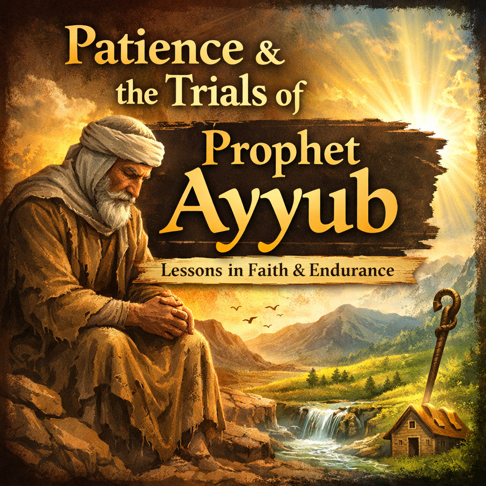

What if pain was not a punishment—but a conversation between you and God? What if every hardship carried meaning, not randomness?
In a world that teaches us to avoid discomfort at all costs, Islam offers a radically different perspective: patience (sabr) is not weakness, silence, or passive suffering. It is strength. It is clarity. It is faith in motion.
Among all prophetic stories, none captures this truth more profoundly than the life of Prophet Ayyub (peace be upon him)—the eternal symbol of patience, dignity, and unwavering trust in Allah.
Life as a Test: When Hardship Asks a Question
Islam does not deny suffering. Instead, it gives suffering meaning.
The Qur'an reminds us that life itself is an examination:
Every difficulty is, in essence, a question posed to the human soul:
- Will you trust or despair?
- Will you grow bitter or better?
- Will you turn away—or turn back to Allah?
Patience is not merely enduring the test; it is answering it correctly.
Not All Tests Look Like Pain
One of the most overlooked truths in Islamic spirituality is this: Ease can be a greater test than hardship.
Some are tested with illness, loss, or loneliness. Others are tested with wealth, power, praise, and comfort.
Classical scholars warn that prosperity often dulls the heart, while hardship awakens it. That is why patience is required in both:
- Patience in hardship (sabr ʿala al-balaʾ)
- Patience in obedience and gratitude (sabr ʿala al-taʿah)
Prophet Ayyub: When Everything Was Taken Away
Prophet Ayyub (peace be upon him) lived in the region of Sham (Greater Syria) and was blessed beyond measure:
- Immense wealth
- Vast lands and livestock
- A loving family
- Strong health
- Deep devotion to Allah
For decades, he lived in gratitude, serving the poor, caring for orphans, and remembering Allah constantly.
Then—everything changed. One by one:
- His wealth vanished
- His children passed away
- His body was struck with severe illness
Years passed. According to many narrations, his trial lasted nearly eighteen years.
Yet the Qur'an records something astonishing:
No anger. No bitterness. No complaint against Allah. Only turning back—again and again.
Patience Beyond Human Calculation
At the lowest point of his suffering, even society distanced itself from Ayyub. Only his wife remained by his side—serving him with love and loyalty.
One day, she gently asked: "Why don't you ask Allah to cure you?"
His response reveals the depth of his spiritual vision. He reflected: "I lived in comfort and ease for decades. How can I complain after only a few years of hardship?"
This was not a rejection of duʿāʾ (supplication). It was gratitude overpowering pain.
When Faith Is Tested Through Deception
Shayṭān attempted to exploit Ayyub's condition indirectly, appearing as a healer and suggesting reliance on means disconnected from Allah.
But Ayyub recognized the danger—not physical, but spiritual.
When he finally raised his hands in supplication, it was not out of desperation or complaint. It was out of fear that suffering might distract him from remembering Allah.
His prayer is one of the most beautiful examples of spiritual etiquette (adab) in the Qur'an:
No demands. No accusations. Just truth—and trust.
Divine Response: Healing, Honor, and Restoration
Allah's response was immediate:
Ayyub was commanded to strike the ground. A spring emerged. Through bathing and drinking from it:
- His health returned
- His strength was restored
- His dignity was renewed
And Allah blessed him with more than what he had lost. Patience was not forgotten. It was rewarded—abundantly.
What Patience Really Means
Patience is not silence without faith. It is faith with endurance.
Patience is not pretending pain doesn't exist. It is trusting Allah despite the pain.
The Qur'an assures us:
To be patient is to recognize the Creator in every circumstance—ease or hardship, gain or loss.
A patient heart is like a mountain:But it does not collapse.
- Storms strike it
- Winds carve it
- Time shapes it
A Final Reflection
If you are facing hardship today—remember Prophet Ayyub.
Your pain is not unseen. Your patience is not wasted. Your duʿāʾ is not unheard.
Sometimes Allah delays relief not because He is distant—but because He is preparing something greater.
May we learn the secret of sabr: to endure with dignity, to trust without conditions, and to turn back to Allah—always.